Field notes · Hà Nội
河內 2 日
星期日 + 星期六 · 老城 · 巴亭 · 西湖
兩個全日，唔趕。星期日行老城，星期六行巴亭。全程只有一個死線：胡志明陵十一點半關門。
- 日子
- 星期日 + 星期六
- 模式
- 步行為主 · 2–4 程 Grab
- 唔去會後悔
- 3 個
- 預算
- HK$720 – 1,000 / 人
Recommendation
星期日 A，星期六 B
A 唔受關門時間綁，落機即玩；B 食正陵墓上午場。星期六夜晚返老城食最後晚餐＋行夜市，收尾最靚。
Lăng Chủ tịch Hồ Chí Minh 星期二至四 08:00–11:00；星期六、日 08:00–11:30；星期一、五閉館。想去就只有朝早，冇下午補飛。
Chợ đêm Hàng Đào – Đồng Xuân 18:00–24:00。你兩個日子都中，所以晚晚有得行，唔使搶。
上午冇得用，就唔好排陵墓。將巴亭區全部搬去星期六 08:00，星期日只做還劍湖圈。
反正瞓唔返，08:00 去陵墓係順便，唔係特登早起。行李先寄存酒店，沖個涼再出門。
日落位要 16:30 前到。排到 18:00 先去龍邊橋，只會見到黑。
唔去會後悔
- 文廟 Văn Miếu越南第一間大學，1070 年。五個庭院，石龜馱進士碑。
- 火車街 15:20 嗰班入 cafe 坐定，火車貼住枱邊過。早 30 分鐘到霸位。
- 蛋咖啡 @ Cafe Giang1946 年發源地，蛋黃煉奶泡厚到似 Tiramisu。
時間、門票以 Google 地圖同現場為準。出發前一晚再查一次。
Plan A
老城一日
唔使趕 · 全程步行
由一碗河粉開始，以啤酒街同夜市收尾。整日唔使搭車，落雨都走得切。
- 08:00Phở Gia Truyền Bát Đàn 早餐排隊 15–30 分鐘，現金，10:00 賣完即收。
- 09:00三十六行街亂行 → 東宣市場由 Bát Đàn 行 10 分鐘。每條街賣一種行業。
- 10:30白馬廟 → 還劍湖一圈湖一圈 1.7km，約 30 分鐘。
- 11:30玉山祠 + 旭橋30,000 VND，20 分鐘夠。
- 12:00Bún Chả 74 Hàng Quạt 午餐只做 10:30–14:00，巷仔炭燒，本地人推薦。
- 13:30Cafe Giang 蛋咖啡39 Nguyễn Hữu Huân，順路，坐低抖。
- 14:30聖若瑟主教座堂 → 書街Nhà thờ Lớn，影相、買書。
- 15:10火車街（Trần Phú 段）等 15:20 火車要入 cafe 消費；坐定，唔好企路軌。
- 17:00還劍湖邊等日落Cafe Đinh 二樓窗口位，17:20 日落。
- 18:30水上木偶戲 18:30 場200,000 VND 坐前六行，50 分鐘。
- 20:00啤酒街 Tạ Hiện 晚餐烤魷魚＋生啤，膠凳。
- 21:00週末夜市（Hàng Đào → 同春市場）開到 24:00。
Plan B
巴亭 + 文廟 + 西湖
一日拎走重點 · 4 程車
呢堆景點全部 08:00–17:00 硬性關門，所以要放喺有精神嘅一日。
- 07:30Grab 去巴亭廣場60,000–80,000 VND，15 分鐘。
- 08:00胡志明陵排隊＋安檢 45–60 分鐘。長褲、唔露肩、唔帶大袋。
- 09:00一柱廟 → 高腳屋 → 主席府花園全部步行 5 分鐘內。
- 10:15文廟（Văn Miếu）Grab 5 分鐘。留 60–75 分鐘，全城最靚。
- 11:45午餐：Chả Cá Thăng Long11:00 開門，唔使等。薑黃魚鍋自己煎。
- 13:00昇龍皇城（Hoàng thành Thăng Long）星期一休。60–90 分鐘，地下戰時地堡必睇。
- 15:00火爐監獄（Hỏa Lò）Grab 8 分鐘。60–90 分鐘，心情會重。
- 16:30鎮國寺 + 真武觀Grab 10 分鐘。呢個鐘光最靚。
- 17:30西湖邊行／湖邊咖啡睇日落17:20 日落，唔好遲。
- 19:00晚餐：Luk Lak 或 Tầm Vị ⭐星店要訂位。
- 21:00Grab 返老城／夜市15 分鐘。
Plan C
冷門河內
避人 · 影相 · 半日
唔想同旅行團迫，就行呢條。三個影相位全部免費，本地人都少去。
- 08:30民族學博物館Grab 15 分鐘，星期一休。留 90 分鐘。
- 10:30咖啡：Tranquil（西湖店）最靜，wifi 最快。
- 12:00午餐：Bún Chả 34（竹帛湖邊）MICHELIN Bib Gourmand，08:30–17:30。
- 13:30陶瓷壁畫 → 龍邊橋 → 香蕉島橋上影相，落橋梯去紅河沙洲。
- 16:00馮興壁畫街 → B-52 湖兩個都係 15 分鐘影相位，零遊客。
- 17:00龍邊橋睇日落全日最靚，17:20 前要到。
- 18:30老城晚餐 + 夜市收尾。
- 23:00（可選）廣壩花市想癲就去，Grab 20 分鐘。最旺 23:00–04:00。
食乜
河內規矩：河粉係早餐，bún chả 係午餐。下午三點想食 bún chả 係搵唔到嘅。
早餐 06:00–10:30
| 店 / 食乜 | 價 | 開放 | |
|---|---|---|---|
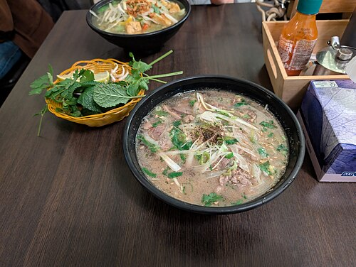 Phở Gia Truyền Bát Đàn河內最有名牛肉河，排隊、現金、賣完即收 | 60–70k | 06:00–10:00、18:00–20:30 | 地圖 ↗ |
Phở 10 Lý Quốc Sư旅客最易去，10 款河粉，坐得舒服 | 70–90k | 06:00–22:00 | 地圖 ↗ |
Phở Thìn牛肉先炒過，湯濃、蔥爆炸多 | 60–70k | 05:30–21:30 | 地圖 ↗ |
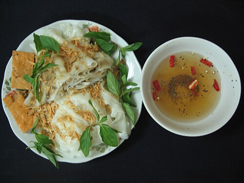 Bánh Cuốn Thanh Vân即蒸腸粉，加炸蔥、豬肉腸 | 40–60k | 06:00–14:00、17:00–22:00 | 地圖 ↗ |
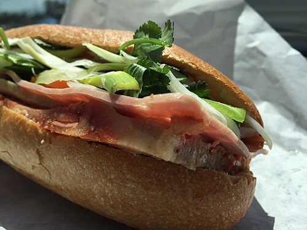 Bánh Mì 25越南法包，外脆內軟 | 40–60k | 07:00–21:00 | 地圖 ↗ |
午餐 10:30–14:00｜Bún chả 主場
| 店 / 食乜 | 價 | 開放 | |
|---|---|---|---|
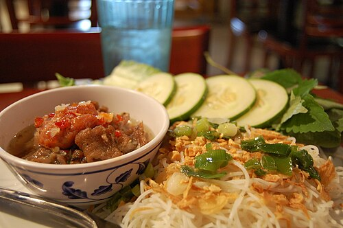 Bún Chả 74 Hàng Quạt巷仔炭燒豬肉，本地人第一推薦，只做午市 | 40–60k | 10:30–14:00 | 地圖 ↗ |
Bún Chả Đắc Kim1965 年老店，最出名，配蟹春卷 | 70–120k | 10:00–20:30 | 地圖 ↗ |
Bún Chả 34 (Tuyết)MICHELIN Bib Gourmand，近竹帛湖 | 40–60k | 08:30–17:30 | 地圖 ↗ |
Bún Chả Hương Liên奧巴馬＋Bourdain 嗰間，朝聖用 | 60–100k | 08:00–20:30 | 地圖 ↗ |
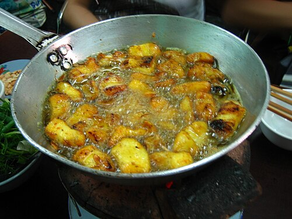 Chả Cá Thăng Long薑黃魚鍋自己煎，河內獨有 | 150–200k / 人 | 11:00–21:00 | 地圖 ↗ |
小食 / 下午
| 店 / 食乜 | 價 | 開放 | |
|---|---|---|---|
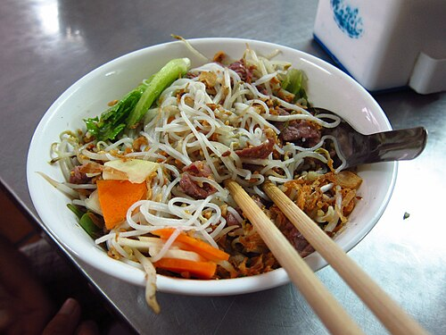 Bún Bò Nam Bộ乾拌牛肉米粉，酸甜、唔熱 | 60k | 07:00–22:00 | 地圖 ↗ |
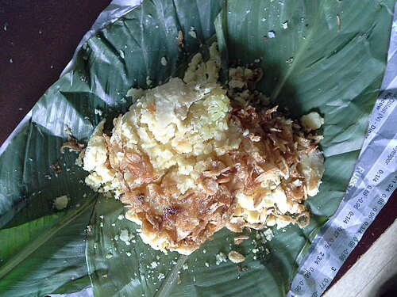 Xôi Yên糯米飯配肉鬆、滷肉 | 30–60k | 06:00–23:00 | 地圖 ↗ |
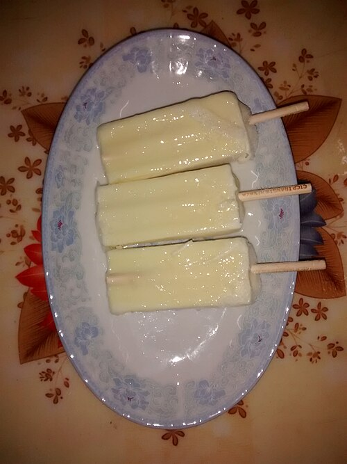 Kem Tràng Tiền1958 年老字號雪糕 | 15–25k | 08:00–22:00 | 地圖 ↗ |
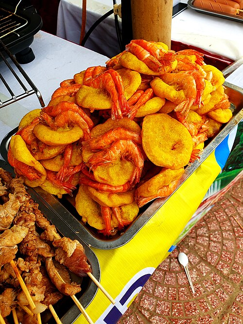 Bánh tôm Hồ Tây西湖炸蝦餅，配酸甜魚露 | 30–50k | 10:00–20:00 | 地圖 ↗ |
晚餐（想坐低食）
飲乜
早上 phin 黑咖啡，下午蛋咖啡，黃昏 bia hơi，夜晚熱檸茶。
| 店 / 飲乜 | 價 | |
|---|---|---|
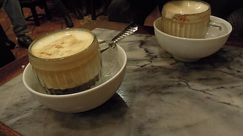 Cafe Giang蛋咖啡 Cà phê trứng（1946 年發源地） | 30–45k | 地圖 ↗ |
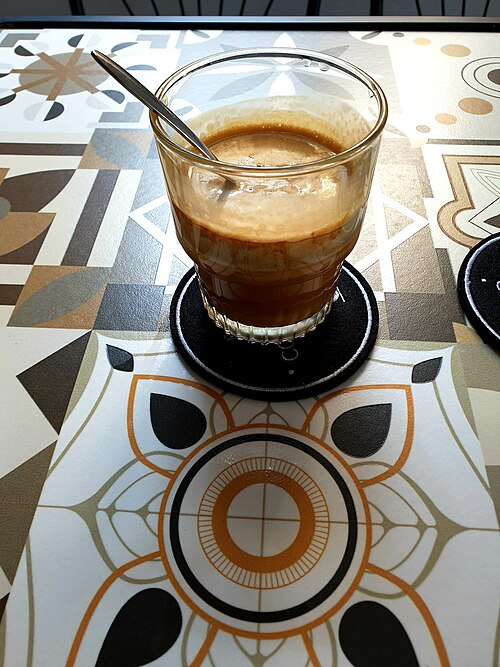 Ca Bop鹽咖啡 Cà phê muối，鹹甜交錯 | 45–60k | 地圖 ↗ |
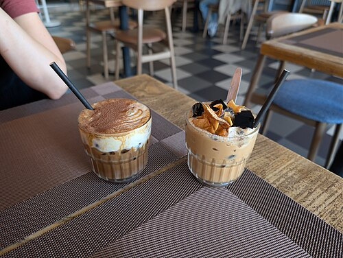 Cộng Càphê椰咖啡 Cà phê dừa，椰漿冰沙 | 55–70k | 地圖 ↗ |
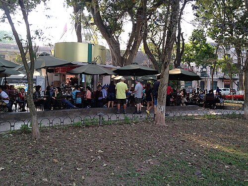 Cafe Đinh二樓窗口位，望還劍湖 | 35–50k | 地圖 ↗ |
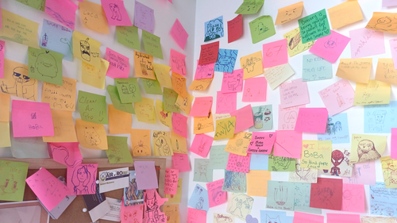 The Note Coffee全店貼滿便利貼 | 50–70k | 地圖 ↗ |
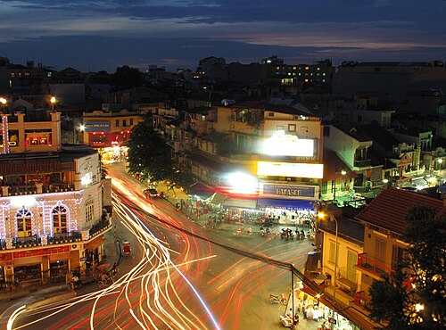 Hidden Gem Cafe舊工廠改建，多層打卡位 | 50–70k | 地圖 ↗ |
Tranquil Books & Coffee書＋咖啡＋鋼琴，最靜 | 60k | 地圖 ↗ |
住邊
老城區落腳，行去還劍湖 5 分鐘就夠。以下三間我逐間對過 Booking 評分（2026-11），房價隨日期變，撳入去用你嘅日期再核。
- La Siesta Classic Ma May 老城區 · 36–38 Ma May · 精品 4 星 · HK$700 – 1,100 / 晚 老城心臟，行去還劍湖 5 分鐘。頂樓 bar、早餐好，服務係賣點；房細但靜。
- Hanoi Emerald Waters Hotel Valley 老城區 · 還劍湖邊 · 中檔 3–4 星 · HK$400 – 700 / 晚 性價比最高的一批。位置極好，行去湖邊 3 分鐘，早餐同員工評價高。
- Hanoi Buffalo Hostel 老城區 · 還劍湖邊 · Hostel · HK$90 – 200 / 床 有泳池、酒吧、24 小時接待。想識人、想慳錢就揀呢隻。
法餐
河內係全世界做「平價 fine dining」最抵嘅城市之一：法國技術，越南成本。你嘅日子係六、日，商業午餐多數只做平日，所以策略係食 3 道菜晚餐。
價錢係 2026-11 網上資料，埋單加 5% service + 8–10% VAT；全部要訂位。
-
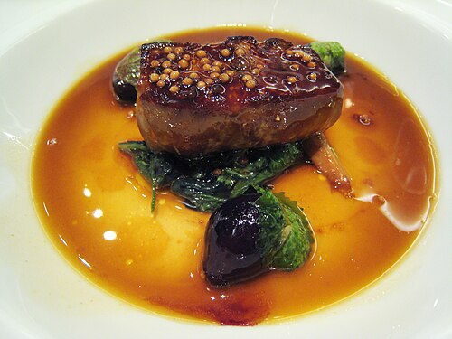
Maison Vie 28 Tăng Bạt Hổ · 法國區 · Fine dining 法籍廚師、新古典別墅、白枱布。晚餐 3 道菜已經有齊前菜主菜甜品，係全城最抵嘅「儀式感」。 -
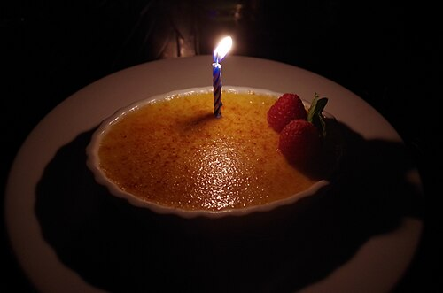
Villa des Fleurs 95 Quán Thánh · 西湖邊 · Fine dining 花園別墅，2025 年由 Sakal Phoeung 團隊接手。行完鎮國寺行 5 分鐘就到，最啱星期六晚。 -
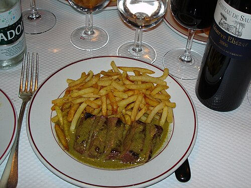
La Badiane 10 Nam Ngư · 老城邊 · MICHELIN 入選 法越 fusion，黑白格地板，MICHELIN 2026 名單。想食「有星味但未到星價」就呢間。 -
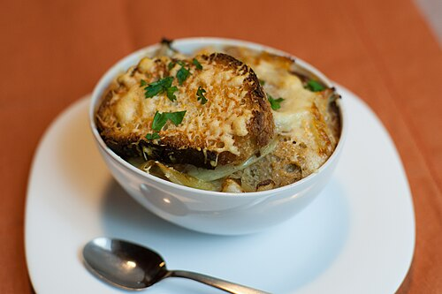
La Table Hanoia 12 Lý Đạo Thành · Press Club 3 樓 · Colonial dining 法式技術＋越南食材，殖民地大堂。想食「環境多過驚喜」就揀呢度，近歌劇院。 -
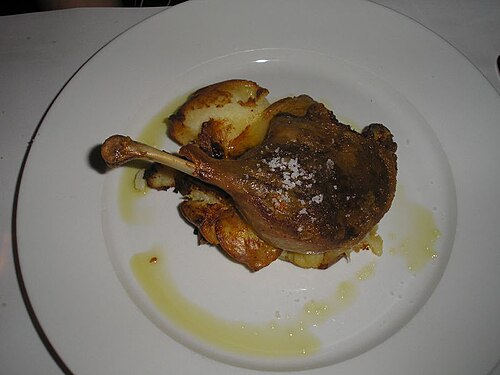
Fabrik 16 Trần Vũ · Ba Đình · French bistro 法國人自己聚腳嘅 bistro。cassoulet、terrine、洋蔥湯，份量正常，唔會食完仲餓。 -
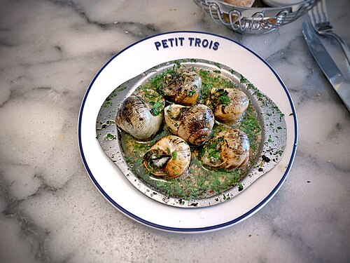
Colette 12 Lô Sư · 老城 · Bistro + wine bar 唔係 fine dining，但 32 款杯裝酒、蝸牛、韃靼牛肉、creme brûlée。想輕鬆飲酒食法國菜就呢間。
景點池
三組，自己揀。A 步行、B 搭車、C 避人。
A 組｜老城 + 還劍湖
步行圈，15 分鐘半徑
| 景點 | 時間 | 開放 | 門票 | |
|---|---|---|---|---|
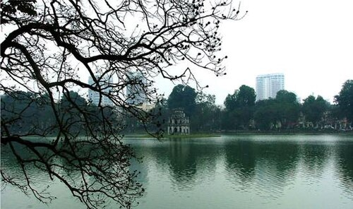 還劍湖Hồ Hoàn Kiếm市中心湖泊，晨運、太極、本地人生活 | 30–45 分 | 24 小時 | 免費 | 地圖 ↗ |
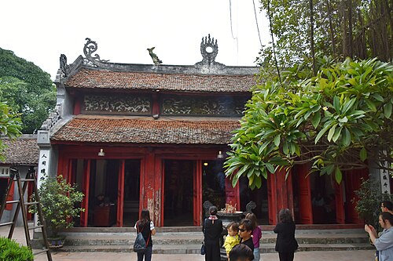 玉山祠 + 旭橋Đền Ngọc Sơn湖中島紅橋，最出名打卡位 | 20–30 分 | 07:00–18:00 | 30,000 | 地圖 ↗ |
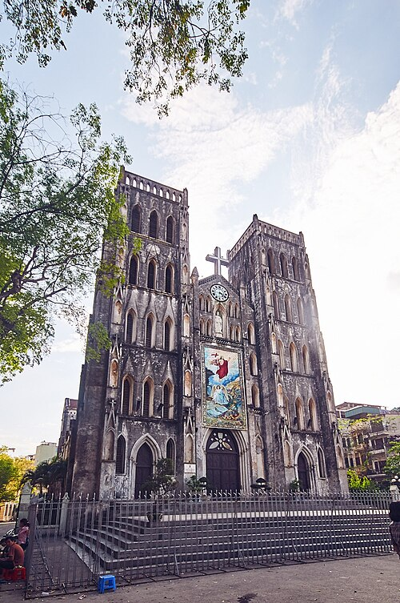 聖若瑟主教座堂Nhà thờ Lớn1886 年法式哥德教堂 | 20–30 分 | 外圍 24 小時；入內約 08:00–11:00 / 14:00–17:00 | 免費 | 地圖 ↗ |
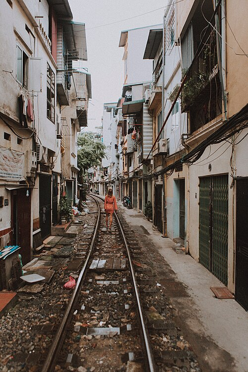 火車街Phố Đường Tàu火車貼住屋企過，要入 cafe 先入得 | 60–90 分 | 靠 cafe；火車約 15:20、19:xx | 一杯 30–60k | 地圖 ↗ |
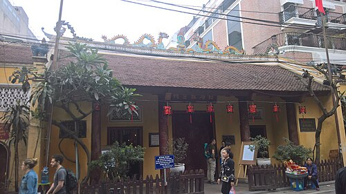 白馬廟Đền Bạch Mã老城區最古老廟之一，本地人拜神 | 15 分 | 約 08:00–17:00 | 免費 | 地圖 ↗ |
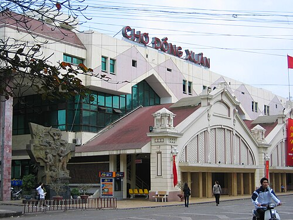 東宣市場Chợ Đồng Xuân批發市場，睇本地人買嘢多過購物 | 30–45 分 | 06:00–18:00 | 免費 | 地圖 ↗ |
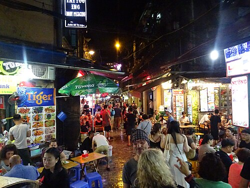 啤酒街Phố Tạ Hiện膠凳、生啤 10–20k 一杯 | 60 分 | 17:00–late | 隨意 | 地圖 ↗ |
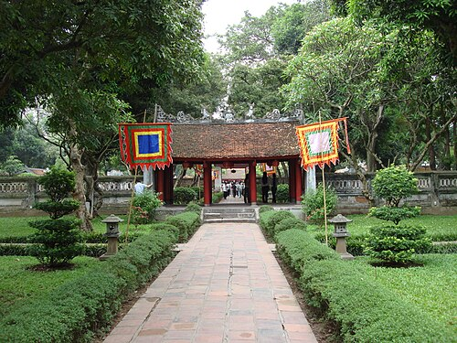 書街Phố Sách 19/12本地人書攤，樹蔭下休息 | 20 分 | 08:00–22:00 | 免費 | 地圖 ↗ |
B 組｜巴亭 + 文廟 + 西湖
要搭 Grab，半日到一日
| 景點 | 時間 | 開放 | 門票 | |
|---|---|---|---|---|
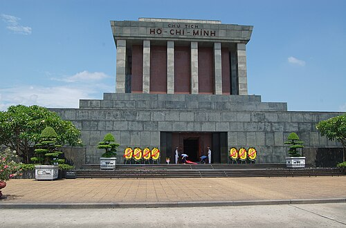 胡志明陵Lăng Chủ tịch Hồ Chí Minh遺體瞻仰，安檢嚴、要著長褲 | 45–60 分 | 二–四 08:00–11:00；六、日 08:00–11:30；一、五休 | 免費 | 地圖 ↗ |
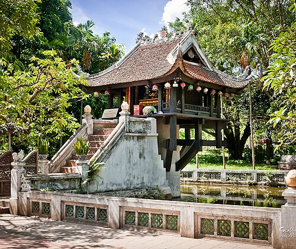 一柱廟Chùa Một Cột蓮花形單柱古廟 | 15–20 分 | 07:00–18:00 | 免費 | 地圖 ↗ |
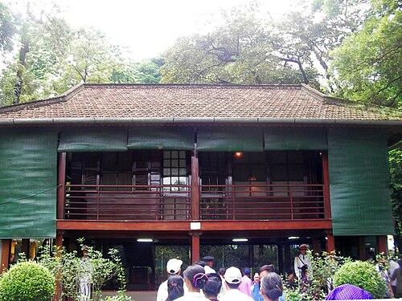 胡志明高腳屋Nhà sàn Bác Hồ他最後住嘅木屋，花園好靚 | 30–40 分 | 07:30–16:00（中午休） | 40,000 | 地圖 ↗ |
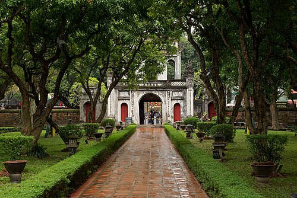 文廟Văn Miếu – Quốc Tử Giám1070 年越南第一間大學 | 60–75 分 | 08:00–17:00 | 30,000 | 地圖 ↗ |
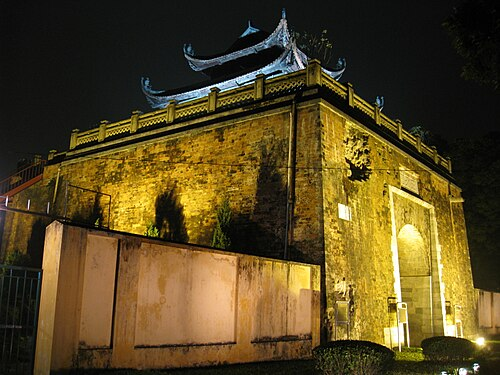 昇龍皇城Hoàng thành Thăng LongUNESCO，地下戰時地堡 | 60–90 分 | 08:00–17:00，星期一休 | 30,000 | 地圖 ↗ |
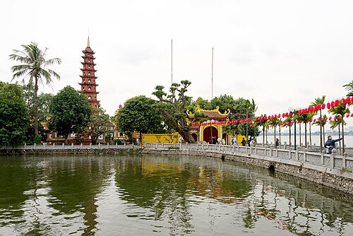 鎮國寺Chùa Trấn Quốc河內最古老佛寺（545 年） | 30 分 | 07:30–18:00 | 免費 | 地圖 ↗ |
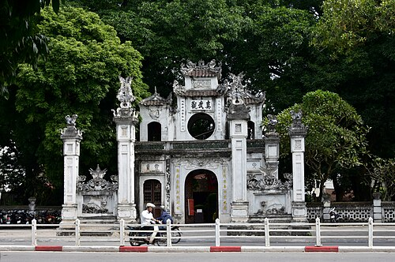 真武觀Đền Quán Thánh道教廟，黑銅真武像，極靜 | 20 分 | 08:00–17:00 | 10,000 | 地圖 ↗ |
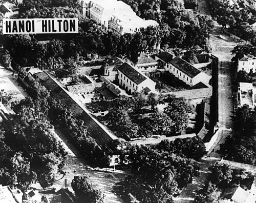 火爐監獄Hỏa Lò法國殖民監獄＋越戰美軍囚室 | 60–90 分 | 08:00–17:00 每日 | 30,000 | 地圖 ↗ |
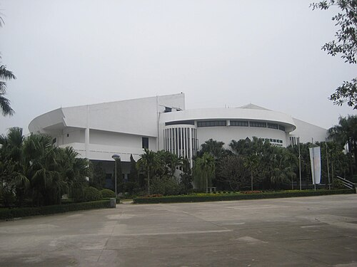 民族學博物館Bảo tàng Dân tộc học54 個民族，戶外有真屋搬入嚟 | 90–120 分 | 08:30–17:30，星期一休 | 40,000 | 地圖 ↗ |
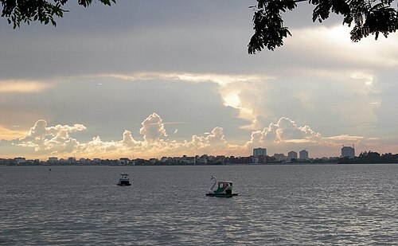 西湖Hồ Tây河內最大湖，黃昏散步 | 45–60 分 | 24 小時 | 免費 | 地圖 ↗ |
C 組｜冷門 / 本地人向
想避人就用呢組
| 景點 | 時間 | 開放 | 門票 | |
|---|---|---|---|---|
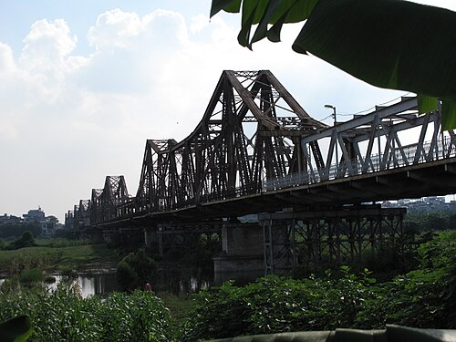 龍邊橋Cầu Long Biên1903 年法殖鐵橋，黃昏行橋 | 40–60 分 | 24 小時 | 免費 | 地圖 ↗ |
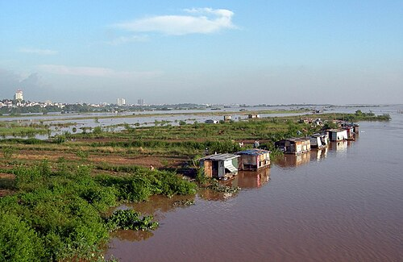 香蕉島Bãi Giữa sông Hồng橋下紅河沙洲，蕉林、菜田、無人 | 45–60 分 | 日間（要行落橋梯） | 免費 | 地圖 ↗ |
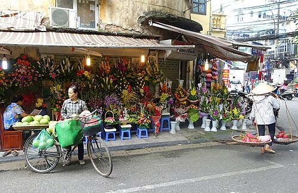 廣壩花市Chợ hoa Quảng Bá凌晨花市，河內最真嘅一面 | 45 分 | 24 小時，最旺 23:00–04:00 | 免費 | 地圖 ↗ |
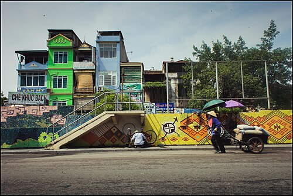 陶瓷馬賽克壁畫Con đường gốm sứ4 公里長馬賽克牆 | 30–60 分 | 24 小時 | 免費 | 地圖 ↗ |
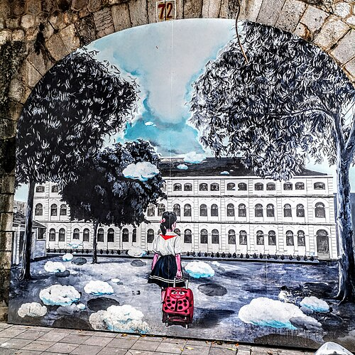 馮興壁畫街Phố bích họa Phùng Hưng舊鐵路橋底壁畫 | 20 分 | 24 小時 | 免費 | 地圖 ↗ |
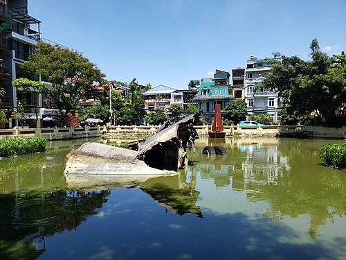 B-52 湖Hồ Hữu Tiệp擊落 B-52 殘骸浸喺民居小湖 | 15 分 | 24 小時 | 免費 | 地圖 ↗ |
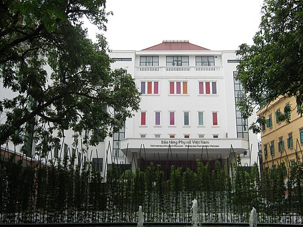 越南婦女博物館Bảo tàng Phụ nữ女性視角嘅越南史，冷氣強、人少 | 60–90 分 | 08:00–17:00 | 30,000 | 地圖 ↗ |
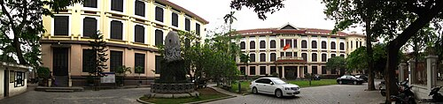 河內美術館Bảo tàng Mỹ thuật法殖建築內，Indochine 畫派 | 60 分 | 08:30–17:00 | 30,000 | 地圖 ↗ |
火車街（Le Duan 段）Phố Đường Tàu Lê Duẩn同一條火車街但少人一半 | 60 分 | 靠 cafe | 一杯 30–50k | 地圖 ↗ |
資料來源
全部真實存在，可以自己覆核。價錢同營業時間會變，落單前再確認。
- Vietnam Airlines — Ho Chi Minh Mausoleum陵墓開放時間、著裝、安檢
- Vietnam Airlines — Hanoi Train Street火車時間表、入場規則
- Vietnam Airlines — Hanoi Night Market夜市 18:00–24:00、五六日
- MICHELIN Guide Vietnam 2026星級／Bib Gourmand 名單
- Lanytrip — Hanoi Michelin Guide 202622 間 Bib Gourmand 地址
- Will Fly for Food — Hanoi Food Guide各店營業時間、價錢、必點
- RooWanders — Hanoi in 2 Days2 日路線、門票、Grab 價
- Postcards from the World — 2 Days in Hanoi行程分區邏輯
- Passport & Stamps — 18 Best Coffee Shops咖啡店排名、價錢
- The Common Wanderer — Old Quarter Guide老城玩法、火車街 cafe
- Chris & Wren — Train Street 20262026 年火車街實際開放情況
- Wander-Lush — Quang Ba & Long Bien Market花市時間
- Travel Insighter — Unusual Things to Do香蕉島、B-52 湖
相片授權
全部 Wikimedia Commons，自由授權
- Hoan Kiem.jpgkohji · CC BY 1.0
- Ngoc Son Temple, Hanoi (15) (37780892234).jpgRichard Mortel from Riyadh, Saudi Arabia · CC BY 2.0
- St. Joseph's Cathedral - Hanoi, Vietnam.jpgArno Kohlem · CC BY-SA 4.0
- Train street in Hanoi.jpgKris Martyn · CC BY-SA 4.0
- Bach Ma Temple, Hanoi (2018) 01.jpgDonald Trung · CC BY-SA 4.0
- Dong Xuan market.jpgJuliana Ng from Singapore · CC BY 2.0
- Tạ Hiện Street.jpgChristophe95 · CC BY-SA 4.0
- Van Mieu Hanoi 4550352543 7f085eeb24 t.jpgJorge Láscar · CC BY-SA 2.0
- Ho chi minh mausoleum.jpgGregor Dodson · CC BY-SA 2.0
- One Pillar Pagoda Hanoi.jpgStaffan Scherz · CC BY 2.0
- Ho Chi Minh House 1463237026 5317a7aaed.jpgjoxeankoret · CC BY-SA 2.0
- Main gate of the Temple of Literature, Hanoi, Vietnam, 20240123 0929 3068.jpgJakub Hałun · CC BY 4.0
- Cổng Bắc hoàng thành Thăng Long.JPGNguyễn Thanh Quang · CC BY-SA 3.0
- Tran Quoc Pagoda, Hanoi, Vietnam, 20240123 1212 3307.jpgJakub Hałun · CC BY 4.0
- Quan Thanh Taoist Temple, Hanoi, 11th century and later (1) (38441404416).jpgRichard Mortel from Riyadh, Saudi Arabia · CC BY 2.0
- HanoiHilton.jpgWikimedia Commons contributor · Public domain
- Trống Đồng building, Vietnam Museum of Ethnology.jpgNam Hy Hoàng Phong · CC BY 3.0
- West Lake (Hanoi).jpgRungbachduong · CC BY-SA 3.0
- Long Bien Bridge 3796092037 9c2b2a236a.jpgTuabiht Rellahcs · CC BY 2.0
- Hanoi Ceramic Mosaic Mural (14727776036).jpgErwin Verbruggen from Amsterdam, The Netherlands · CC BY-SA 2.0
- Phố Bích Họa Phùng Hưng Hàng Mã Hoàn Kiếm Hà Nội Vietnam (2).jpgndoduc · CC BY-SA 4.0
- Vietnamese Women's Museum Building.JPGAumusee · CC BY-SA 3.0
- Vietnam National Museum of Fine Arts panorama.jpgGrenouille vert · CC BY-SA 3.0
- Bún chả Vietnamese food.jpgstuart_spivack · CC BY 2.0
- Bánh cuốn Thanh Trì.jpgCasablanca1911 at vi.wikipedia · Public domain
- Chả cá Lã Vọng.jpgLionel Ng from Singapore · CC BY-SA 2.0
- Bun Bo Nam Bo.jpgfabulousfabs · CC BY 2.0
- Kem sua dua Trang Tien.jpgNorthern Vietnam · CC BY-SA 4.0
- Hanoi bia hoi shipping truck.jpgaudrey_sel · CC BY-SA 2.0
- Egg Coffee (6923068614).jpgDavid McKelvey from Brisbane, Australia · CC BY 2.0
- 15 second exposure of Hanoi, Vietnam from a rooftop cafe.jpgGreg Hayter · CC BY 2.0
- Beef noodle soup (Phở bò) - Pho Hanoi Authentic 2024-12-01.jpgAndy Li · CC0
- Bánh mì thịt nguội.jpgMinh Nguyen · CC BY-SA 4.0
- Lễ hội ẩm thực Cửa Việt th4n2023 đặc sản bánh tôm Hồ Tây (2).jpgPhương Huy · CC BY-SA 4.0
- Món ăn Tết 2023 (bữa cơm gia đình, mâm cơm) (2).jpgPhương Huy · CC BY-SA 4.0
- Flower market - Hanoi, Vietnam - DSC03681.JPGDaderot · CC0
- B52 wreckage, Hữu Tiệp Lake, Hanoi (landscape).jpgPdhadam · CC BY-SA 4.0
- Ly cà phê muối ở Tân Phú ng2th3n2023 (6).jpgPhương Huy · CC BY-SA 4.0
- Cà phê bờ hồ Hoàn Kiếm, Hà Nội 001.JPGPhan Minh Tuấn · CC BY-SA 4.0
- Xôi xéo.jpgViethavvh · CC BY-SA 4.0
- Bai giua song Hong.jpgGV (thảo luận) · CC BY-SA 3.0
- Wall of sticky note are seen in cafe.pngNew editing editor · CC BY-SA 4.0
- Vietnamese Salted Coffee & Xin chao's coconut Coffee - Xin Chao, Eastbourne 2026-08-14.jpgAndy Li · CC0
- Steak-frites (steak-and-chips).jpgDcollard · CC BY-SA 3.0
- Foie gras en cocotte.jpgCharles Haynes from Bangalore, India · CC BY-SA 2.0
- Crème Brûlée with Raspberries and Candle.JPGPatrick Pelletier · CC BY-SA 4.0
- Soupe à l'oignon.jpgLudovic Péron · CC BY-SA 3.0
- Burgundy escargots, garlic, parsley, butter.jpgT.Tseng · CC BY 2.0
- Confit de canard.jpgNikchick · CC BY-SA 2.0